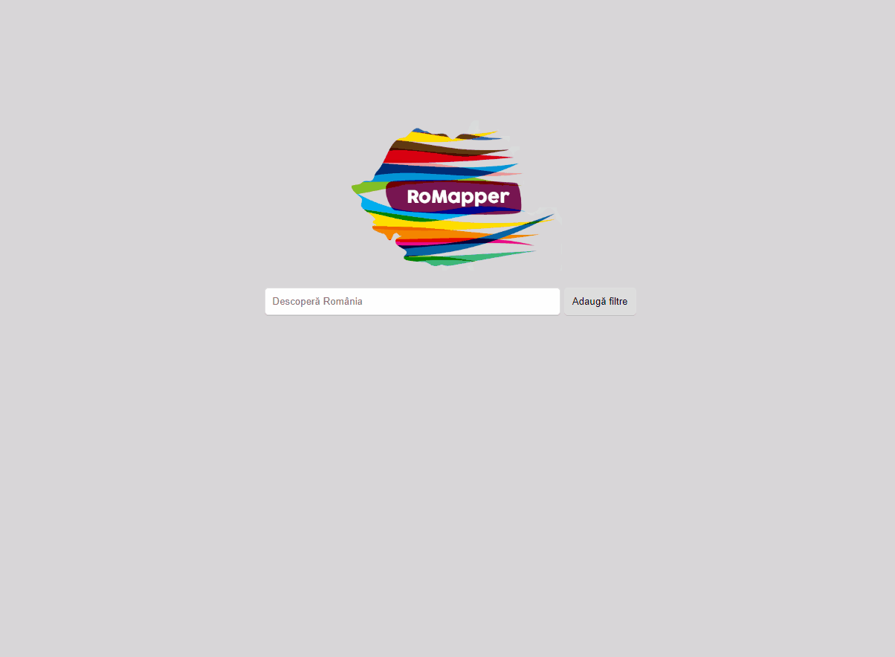
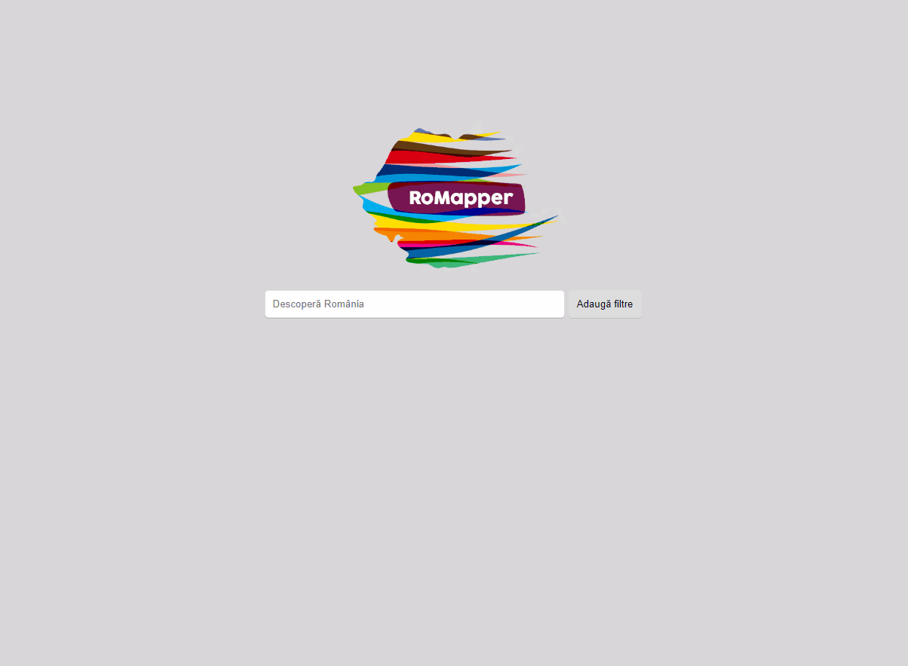

RoMapper
Discover romanian's ethnographic monuments
Authors
Application description
RoMapper aims to offer a simple way for searching and discovering romanian's etnographic monuments.
The user is able to filter the results based on certain criterias and click them in order to read more about each result.
Architecture
The main page of the application contains a logo, a simple search input and a filter button.
Once the user starts typing in the search input, the application begins to fetch data fron a dataset, and displays each result as a list, having a picture on the left side, and a title and a small description on the right side of the result box.
Upon fetching the data from the dataset, the input slighty moves up, and the logo gets smaller, in order to make room for the new results.
The user is also able to set filters for the results. Clicking the "Filter" button displays a new box, where the user is able to be more specific about the searching term.
After selecting the desired filters, clicking on "Set Filters" the application will begin to fetch the data and display the results, based on the selected filters.
Clicking on a result will open it, displaying more informations and pictures about it.
Modules
The main modules of the apications are:
-
List of monuments:
The user is able to search a specific monument based on two criterias:
- Search feature - The user types in the search input, and the feature is filtering the data from its dataset, based on the title and the description of the monument, and displays them on the page on each character press.
- Filters feature - The user is able to select specific details about the wanted monument through the filters box. After opening the filters box, the user can see a series of dropdowns, radio boxes and check boxes and select them in order for the feature to return all the matched monuments, in a list form, only after the 'Search' button had been pressed.
After a search, the aplication displays on the page a list of monuments, each monument having:
- Image
- Title
- Description
- A button for 'Read more'
-
View monument:
Each monument page displays:
- Series of details about the monument:
- Picture
- Title
- Description
- Dating
- Area
- Locality
- Bibliography
- Ethnicity
- Fencing
- Museum owner
- Original name
- Monument type
- Map location - using Google Maps API the feature displays a pin on the area where is the museum located.
- Series of details about the monument:
-
Visualisation:
- 2D Visualisation - based on the data found on the datasets, the application displays different pictures and 2D graphics about the monument.
- 3D Visualisation - based on the data found on the datasets, and an external API, the feature is able to display 3D images of monuments:
- The interior of the monument
- Different items inside the monument
- A general 3D view of the monument
Each of these modules will be displayed in the following diagrams.
Diagrams
Activity diagram:
Usecase diagram:
Flows
The main flows of the apications:
-
User types in the search input, the application returns results based on the term entered by the user. A list of results is displayed, each result contains an anchor to the main page of that monument. Clicking on the anchor, the user is sent to a page that contains more informations about the result.
Image 7. Simple search flow -
User clicks on `Filters` button, the application displays a series of inputs, radio buttons, check boxes. After the user selects the filters, and clicks the `Set filters` button, the application returns a list of results based on the filters selected by the user. Each result contains an anchor to the main page of that monument. Clicking on the anchor, the user is sent to a page that contains more informations about the result.

Image 7. Filter search flow -
After a successfully search, the user can click on 'Citește mai mult' anchor to open the monument page. It displays a series of details about the selected monument. Returning to the home page will be made by clicking on the RoMapper logo displayed in the top-left area of the page.

Image 7. Open monument flow
Technologies
The application is build used several technologies:
- HTML
- CSS
- SCSS as preprocessor
- Javascript (using the latest ECMAScript features)
- Server-side
- Node JS
- Express JS
- Client-side
- Vue JS
- Webpack
- Server-side
Datasets
When searching a term, the application will read a JSON file, and return the values to the client. Although data.gov.ro exposes a list of romanian ethnographic outdoor monuments in a CSV format, we converted it in a JSON format, so it can be easily used with javascript.
The relevant results stored in the dataset will be displayed when searching for a term, each result having an anchor to its own page. When clicking a result, the application makes a result to a third party application, which returns more informations about the searched term.
Input/Output data formats and data flows
As the user starts typing in the search bar, the client uses a debounce function, that delays invoking function until 250 milliseconds have elapsed since the last time the debounced function was invoked. This function sends a request to the server, having as parameter the searched value and/or the added filters. The server responds with a list of items that match the searched value and/or the added filters.
Img. 6. displays an example of request made by the client when the user typed `han` keyword. The server responds with a list of 5 items matching the searched value.

Each item of the list contains:
- id of the monument
- title of the monument
- description of the monument
- thumbnail of the monument
Based on these properties, the client renders a summary about each monument.

If the user wants to read more about a certain monument, he clicks on the `Citește mai mult` link, which redirects him to a new page dedicated to the selected monument.
The client sends a new request to the server asking for all the informations of the selected monument, based on its id.

In the img. 8, we can see that the client sends the monument id to the server, and it responds with a series of properties:
- area
- bibliography
- dating
- description
- ethnicity
- fencing
- locality
- museum
- name
- originalName
- thumbnail
- title
- type
Client then displays the data.
Design
The application is intuitive and has a simple user friendly design. Img. 6. displays the first page of the application, having the filters box closed.
Img. 7. displays the first page of the application, having the filters box opened.
Img. 8. displays a monument page, that contains a series of informations about the selected monument, and a picture of it.